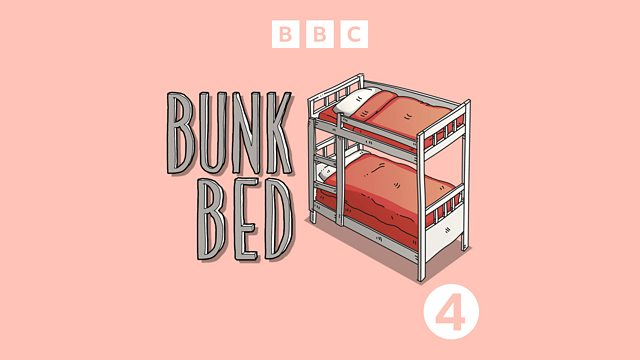
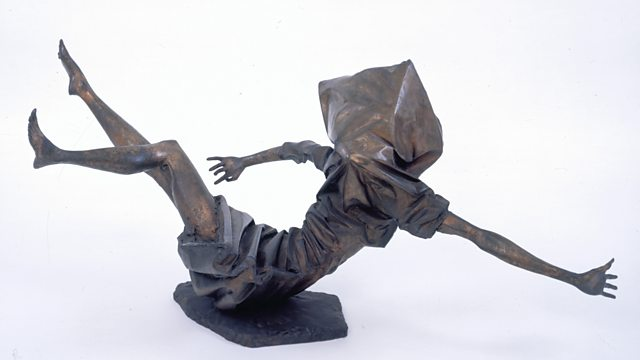

Bunk Bed
S8 E1 - The great comic actor Kathy Burke reveals the joy of amusing police officers by giving them 'the fingers' in her 50s, and explores the art of eating crisps in bed.
Listen nowWe go out to fascinating people in South Africa, USA, Arctic Circle, India, UK and across Europe. We make comedy podcasts, revealing Radio documentaries for BBC Radio 4, short films about history and contemporary culture for the BBC, the US science channel Curiosity Stream, PSB and organisations such as the Imperial War Museum, London. We work with award-winning directors and producers, brilliant researchers, experts and talent from around the World. Peter Curran is exec producer and our all our audio is mixed by David Thomas, BBC Sound Designer of the Year.

S8 E1 - The great comic actor Kathy Burke reveals the joy of amusing police officers by giving them 'the fingers' in her 50s, and explores the art of eating crisps in bed.
Listen nowPeter Curran follows playwright and director Kwame Kwei-Armah as he brings radical plans to London's Young Vic Theatre as its new artistic director with a musical Twelfth Night.
Listen now
Peter Curran examines how a national museum surrounded by a recent conflict that killed more than 3,500 people now tells that story through some startling exhibits.
Listen nowThe nomadic Sámi people of northern Europe believe that the animals, plants and rocks they share their land with possess a soul.
Listen now